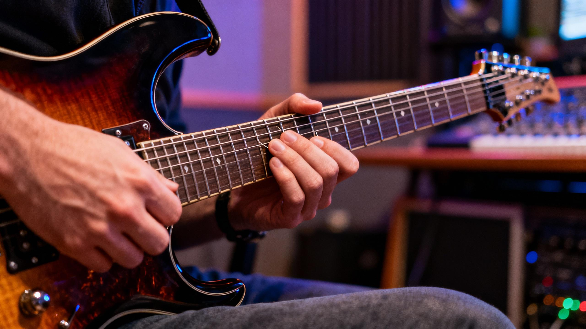
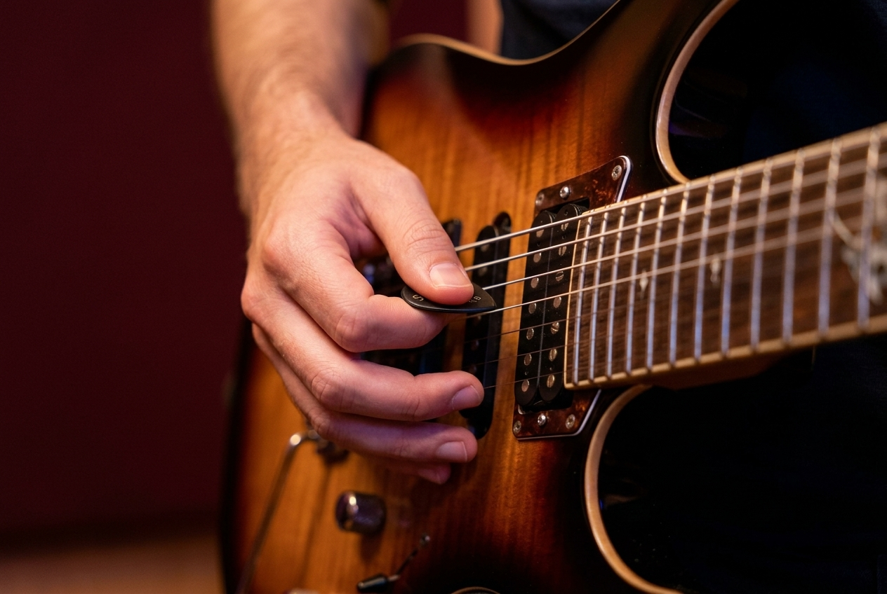
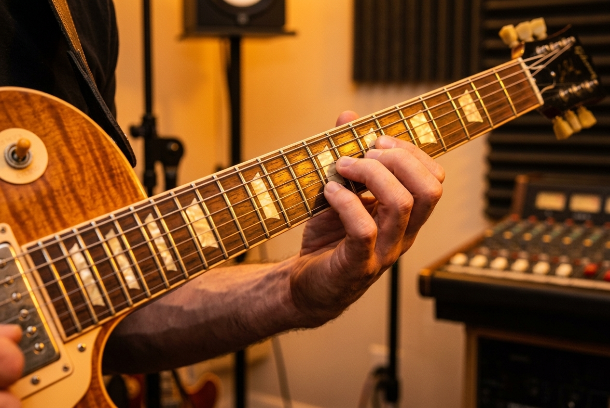
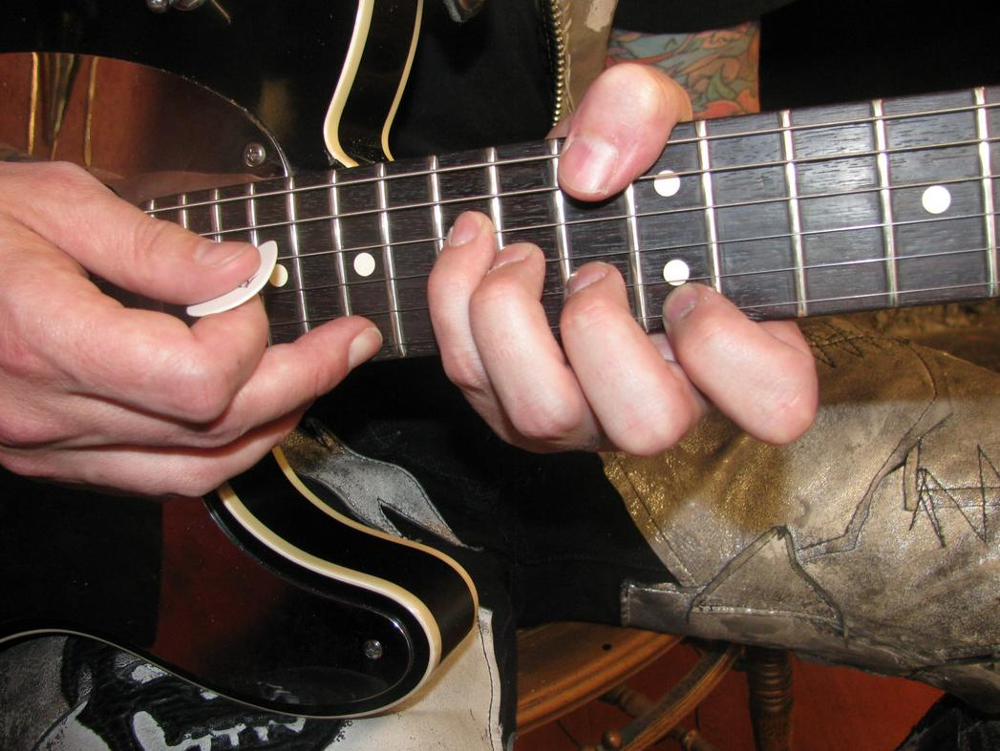

Arpejos
Um arpejo acontece quando as notas de um acorde são tocadas separadamente, em vez de serem executadas simultaneamente. O Sweep Picking facilita a execução de arpejos extensos e rápidos.
Imagine tocar várias notas em sequência com um único movimento contínuo da palheta. Essa é a essência do Sweep Picking, uma técnica que exige coordenação, precisão e muito controle das duas mãos.
Muito utilizada no rock, metal e jazz fusion, ela permite executar arpejos com velocidade e fluidez, criando passagens musicais que parecem praticamente impossíveis quando observadas pela primeira vez.

O Sweep Picking, também conhecido como palhetada varrida, consiste em percorrer cordas consecutivas com a palheta em uma única direção, realizando um movimento contínuo, como se estivesse varrendo as cordas.
Diferentemente da palhetada alternada, em que os movimentos para baixo e para cima se alternam a cada nota, no Sweep Picking a palheta acompanha o sentido das cordas. Ao subir pelas cordas, utiliza-se um movimento para baixo; ao retornar, um movimento para cima.
Não basta simplesmente arrastar a palheta pelas cordas. Cada nota precisa ser tocada individualmente. Para isso, os dedos da mão do braço devem liberar a pressão sobre cada nota no momento correto, evitando que os sons se misturem.

A palheta percorre as cordas de maneira contínua, enquanto a mão do braço acompanha o movimento, pressionando e liberando as notas. A precisão desse sincronismo é o que permite obter um som limpo e definido.
O movimento precisa ser econômico e controlado. Forçar a velocidade antes de dominar a execução costuma prejudicar a clareza das notas.
O Sweep Picking vai muito além de tocar rápido. Ele permite explorar a estrutura dos acordes e transformar a harmonia em frases melódicas.
Um arpejo acontece quando as notas de um acorde são tocadas separadamente, em vez de serem executadas simultaneamente. O Sweep Picking facilita a execução de arpejos extensos e rápidos.
As tríades são estruturas formadas por fundamental, terça e quinta. Elas podem ser organizadas em diferentes regiões do braço da guitarra e utilizadas para construir arpejos maiores.
Os modos gregos ajudam a compreender o contexto harmônico em que os arpejos aparecem. É possível combinar notas de escalas e arpejos para criar frases mais elaboradas e expressivas.

Imagine um acorde de Lá menor, formado pelas notas Lá, Dó e Mi. Em vez de tocar todas essas notas ao mesmo tempo, você pode percorrê-las individualmente, formando um arpejo.
Com o Sweep Picking, essa sequência pode ser executada de maneira rápida e fluida, explorando diferentes posições do braço e criando frases que acompanham a progressão harmônica de uma música.
O grande desafio do Sweep Picking não está somente na velocidade. A técnica exige que as duas mãos executem movimentos diferentes, mas perfeitamente sincronizados.
A palheta precisa atingir cada corda exatamente no momento em que a outra mão prepara a nota correspondente.
É necessário impedir que notas anteriores continuem vibrando. O controle do muting é fundamental para evitar ruídos e sobreposição de sons.
O movimento precisa ser contínuo, sem interrupções desnecessárias, mantendo a mesma intensidade e regularidade entre as cordas.
Os dedos precisam pressionar e liberar as notas de maneira independente, sem deixar que o arpejo se transforme em um acorde soando simultaneamente.
A melhor maneira de desenvolver a técnica é começar lentamente e aumentar a velocidade somente quando os movimentos estiverem limpos.

O Sweep Picking pode ser combinado com o Tapping para ampliar as possibilidades dos arpejos. Nessa combinação, a palhetada percorre as cordas enquanto um dedo da outra mão é utilizado para acrescentar notas em regiões mais agudas do braço.
Uma aplicação comum consiste em executar um arpejo com a palheta e, ao chegar à região mais aguda, utilizar o tapping para alcançar uma nota adicional. Em seguida, a execução pode retornar pelas cordas com pull-offs e novas palhetadas.
O resultado são frases mais extensas, com maior alcance melódico e possibilidades de combinações que vão além do arpejo tradicional.
Não se trata apenas de tocar mais notas, mas de explorar novas possibilidades musicais com o instrumento.
Conheça três nomes que ajudaram a desenvolver, popularizar e elevar essa técnica na guitarra.
Uma das principais referências históricas da técnica. Desenvolveu e sistematizou métodos de Sweep Picking, ampliando suas aplicações em arpejos, escalas e harmonia.

Tornou-se um dos maiores símbolos da técnica no rock. Inspirado pela música clássica, utiliza arpejos rápidos e passagens de grande virtuosismo.
Reconhecido por sua velocidade, criatividade e complexidade musical. Seus arpejos e combinações técnicas tornaram-se referências para guitarristas de diferentes gerações.